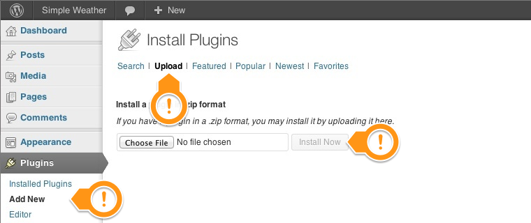

Documentation v.1.0 for Simple QR Codes Plugin v.1.0
You can read below a comprehensive guide with detailed instructions about the Simple QR Codes Plugin functionalities. Each section is carefully explained, using helpful screenshots and videos when necessary. It contains everything you need to have your plugin up and running in no time.
We provide Free Customer Support for all Curly Themes products through our quick and easy ticket application interface. Please limit your inquiries to problems related to the Simple QR Codes Plugin, its setup and features. For any problems concerning third-party plugins you should address the application’s developer.
Note: We can not offer support for custom CSS code customization. You should ask a professional developer for aid if you require help with advanced customization and programming.
Curly Themes offers a free ticket support application for all clients, through a real-time license code automatic verification. The dedicated app is fast and easy to use and includes an email notification feature. We will let you know as soon as your inquiry has received an answer. Thanks to our modern design, you can also upload images as an attachment to your support ticket.
Before opening a new ticket, please make sure you have read through all our documentation and watched the video tutorials. Also, our FAQ section contains helpful answer to questions we often receive from our customers. Following these steps is in the users’ interest, as they will save valuable time. Still, we are always happy to respond to any inquiries you may have related to the Simple QR Codes Plugin.
Before installing this plugin you need to have a WordPress platform already installed on your server. You can download it from Wordpress.org if you don’t have it already.
If you do not know how or you have problems with the installation, you can access helpful information at:
Once you have a working WordPress on your server, you have two available ways to install this plugin.
The .zip file you downloaded from Theme Forest contains a folder named simple-qr.
Upload this folder on your server in your WordPress directory to /wp-content/plugins/
The second way to install the plugin is by logging in from your website /wp-admin to the WordPress Dashboard. From there, you should go to Appearance > Plugins > Add New > Upload and select the file simple-qr.zip from your computer. After clicking the Install Now button, the installation process is finished.
After you have completed the install process, in either of the two ways, you need to activate it.
Log in to the WordPress Dashboard, go to Plugins >Installed Plugins and select Simple QR Codes Plugin. Click the Activate button and you can start using the plugin.
[simple-qr size="" align="" type="" margin="" pointer_text="" pointer_color="" pointer_position=""]
Use this shortcode to insert a QR code in your page.
[simple-qr size="" type="bookmark" title="" url="" margin=""]
[simple-qr size="" type="url" url="" margin=""]
[simple-qr size="" type="contact" name="" address="" phone="" email="" margin=""]
[simple-qr size="" type="email" email="" subject="" message="" margin=""]
[simple-qr size="" type="phone" phone="" margin=""]
[simple-qr size="" type="geo" lat="" lon="" height="" margin=""]
[simple-qr size="" type="sms" phone="" message="" margin=""]
[simple-qr size="" type="wifi" wifi_type=" " ssid="" password="" margin=""]
[simple-qr size="" type="text" text="" margin=""]